外宗人物 / 人工审阅
十三弟子 · 三位宗主
按剑修、御守、丹修查看完整十六人。每张图分别以 512px 和 80px 高度展示，并提供原图入口；页面末尾保留诸葛亮、关羽、嫦娥作为画风基准。
十六张外宗立绘已生成并接入，三代表试稿已由用户确认。 剑修持剑弟子、御守重甲弟子、丹修女宗主已确认；其余角色仍待用户人工审阅。本轮使用16／40次调用，无失败、重试或尺寸降级；本页供人工检查整批风格与细节，不代表整批视觉验收通过。
01 / 剑修
四名弟子与一名宗主 · 直剑、宽刀、长弓与方盾
剑修 · 持剑弟子
代表试稿 · 用户已确认精瘦青年、束发、窄袖青白袍与直剑
运行图原尺寸 · 高 512px
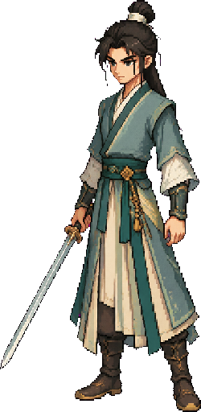
小尺寸对照 · 高 80px
剑修 · 刀修弟子
待用户人工审阅壮年刀修、短发半束、斜披肩甲与宽刃刀
运行图原尺寸 · 高 512px
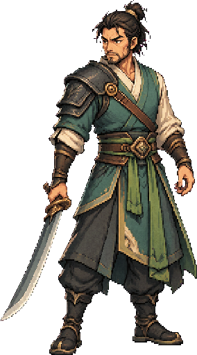
小尺寸对照 · 高 80px
剑修 · 女弓修
待用户人工审阅高挑女性、高马尾、分摆短袍与长弓
运行图原尺寸 · 高 512px
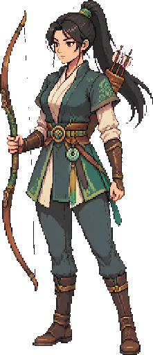
小尺寸对照 · 高 80px
剑修 · 护卫弟子
待用户人工审阅方脸护卫、低盔、紧凑甲衣、方盾与短剑
运行图原尺寸 · 高 512px
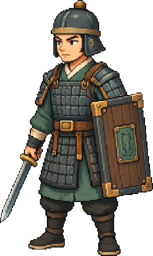
小尺寸对照 · 高 80px
剑修宗主
待用户人工审阅灰鬓、剑形冠、长披肩礼袍与重剑
运行图原尺寸 · 高 512px
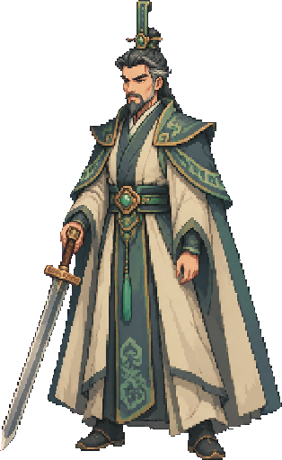
小尺寸对照 · 高 80px
02 / 御守
四名弟子与一名宗主 · 重甲、大盾、铜灯与锻锤
御守 · 重甲弟子
代表试稿 · 用户已确认壮硕人类、露面重盔、块状铁甲与方头锤
运行图原尺寸 · 高 512px
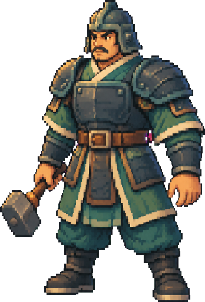
小尺寸对照 · 高 80px
御守 · 女护阵者
待用户人工审阅成熟女性、盘发、玉甲分裙与大盾
运行图原尺寸 · 高 512px
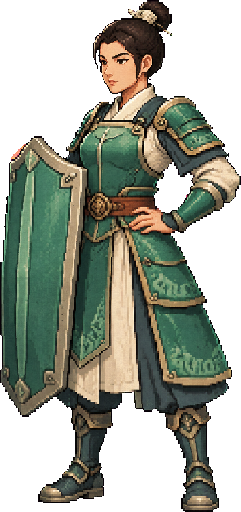
小尺寸对照 · 高 80px
御守 · 男弓修
待用户人工审阅敦实男性、头巾、铜护臂与短复合弓
运行图原尺寸 · 高 512px
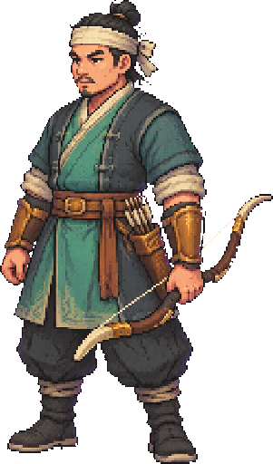
小尺寸对照 · 高 80px
御守 · 持灯器修
待用户人工审阅瘦高器修、束髻、硬挺围裙式外袍与笼式铜灯
运行图原尺寸 · 高 512px
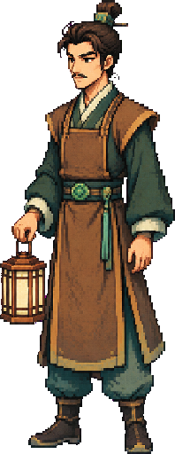
小尺寸对照 · 高 80px
御守宗主
待用户人工审阅老年锻造宗主、短灰须、方冠、礼制重甲与锻锤
运行图原尺寸 · 高 512px
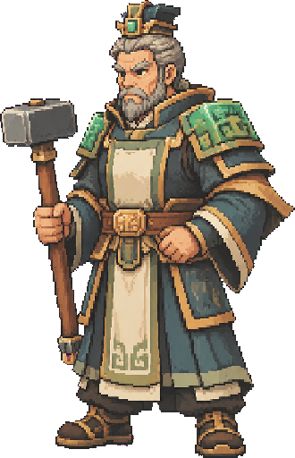
小尺寸对照 · 高 80px
03 / 丹修
五名弟子与一名宗主 · 药囊、木弓、药灯与药杖
丹修 · 女护法
待用户人工审阅精干女性、发辫、交领绿袍、药囊与直剑
运行图原尺寸 · 高 512px
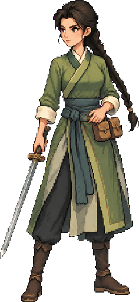
小尺寸对照 · 高 80px
丹修 · 医修弟子
待用户人工审阅温和医修、圆脸、双髻、短披肩与药葫芦
运行图原尺寸 · 高 512px
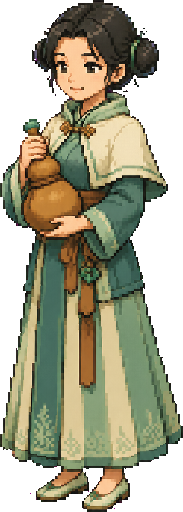
小尺寸对照 · 高 80px
丹修 · 弓修弟子
待用户人工审阅灵巧青年、短束发、叶形披肩、木弓与箭囊
运行图原尺寸 · 高 512px
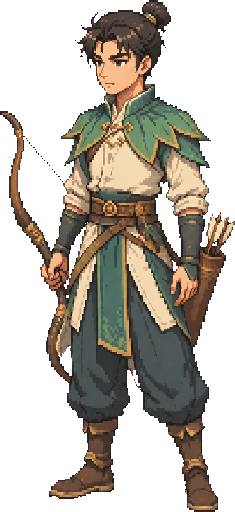
小尺寸对照 · 高 80px
丹修 · 女护卫
待用户人工审阅壮实女性、包髻、藤木护甲、圆盾与短棍
运行图原尺寸 · 高 512px
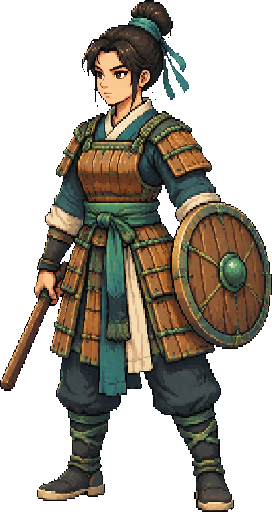
小尺寸对照 · 高 80px
丹修 · 持灯药师
待用户人工审阅消瘦中年、垂髻、长直袍与莲瓣药灯
运行图原尺寸 · 高 512px
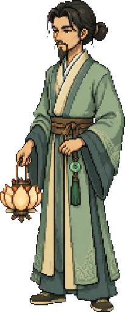
小尺寸对照 · 高 80px
丹修女宗主
代表试稿 · 用户已确认年长女性、银白发髻、玉冠、宽袖长袍与药杖
运行图原尺寸 · 高 512px
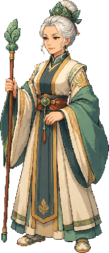
小尺寸对照 · 高 80px
04 / 既有风格基准
比较像素、配色、材质与光照；不要求新人物拥有相同面貌和服饰


人工审阅时请留意
- 十三名弟子与三位宗主是否各有轮廓，三流派是否容易区分；宗主的年龄、冠饰、礼袍和专属道具是否突出。
- 所有角色都是可辨识的人类修士；头冠、手指、脚部和武器是否完整，透明边缘是否干净，服饰颜色是否误抠。
- 与三张已确认试稿及既有基准对照时，像素颗粒、青绿象牙配色、左上光照和人物占幅是否协调。
- 缩到 80px 高后，脸部、体型和标志物是否仍能看清，长武器是否让角色本体过小。